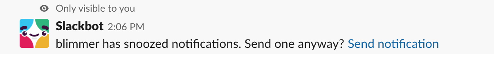

Maximize your Output
(sans “productivity shame”)
Ben Limmer
@blimmer
May 28, 2019

…another talk on “productivity”?
This talk isn’t about
- Working more hours

- Becoming a Pomodoro master

- Being heads down 100% of the time

- Productivity shame

“Productivity Shame” is the act of regularly setting unrealistic expectations for what you can accomplish, and then beating yourself up when you fall short.
- Jocelyn K. Glei
This talk is about
- Tips to stay focused and produce your best work


- Understanding and hacking natural ebbs and flows in your productivity

- Tips to stay on track when delivering a story


Disclaimer
These are things that work well for me, and I’ve seen them work well for other folks. If they don’t work for you, that’s OK!
Breaks in each section are not only for questions, please also provide your experience and tips!
Talk Outline
- Staying Focused
- Optimizing Story Work & Tasks
Talk Outline
- Staying Focused
- Time tracking
- Reducing distractions
- Ebbs and flows of productivity
- Optimizing Story Work & Tasks
Talk Outline
- Staying Focused
- Optimizing Story Work & Tasks
- Planning
- Rabbit Holes
- Asking for Help
Staying Focused
Staying focused
- Time tracking

- Reduce distractions

- Leverage ebbs and flows


Time Tracking

Time Tracking
What task am I tracking time against right now?

Why Time Tracking?
Data!

Time Tracking Data
- What am I spending time on?
Time Tracking Data
- What am I spending time on?
- Am I dedicating time appropriately between categories?
Time Tracking Data
- What am I spending time on?
- Am I dedicating time appropriately between categories?
- Am I stuck and haven’t realized it yet?

toggl.com
- The tool I use
- Free
- Plenty of alternatives!
Reducing distractions


Reducing distractions
- Change your scenery
- Mute notifications
Change your scenery


Change your scenery
- Increase creative output
Change your scenery
- Increase creative output
- Execute without IRL distractions
Change your scenery
- Increase creative output
- Execute without IRL distractions
- Have more control over your environment
Open Office

Change your scenery
- Work from home
- Work in Owens
- Head to a coffee shop
Mute notifications


Mute notifications
- Snooze slack notifications

Mute notifications
- Snooze slack notifications
- Do Not Disturb mode on your phone
Mute notifications
- Snooze slack notifications
- Do Not Disturb mode on your phone
- Turn off macOS global notifications
Mute notifications
- Snooze slack notifications
- Do Not Disturb mode on your phone
- Turn off macOS global notifications
- Let folks know / build in time to “catch up”
Leveraging Ebbs and Flows


Leveraging Ebbs and Flows
- We are not machines

Leveraging Ebbs and Flows
- We are not machines
- What supports your mood and productivity?


Leveraging Ebbs and Flows
- We are not machines
- What supports your mood and productivity?
- When are you most productive?


Leveraging Ebbs and Flows
- Be aware of your natural productivity rhythm and harness it
Leveraging Ebbs and Flows
- Be aware of your natural productivity rhythm and harness it
- Take quick breaks, even when you’re feeling productive
Leveraging Ebbs and Flows
- Be aware of your natural productivity rhythm and harness it
- Take quick breaks, even when you’re feeling productive
- Write a note before your break to get back into it quickly
Discussion time!
- Time tracking
- Reducing distractions
- Leveraging ebbs and flows
Halfway there!
-
Staying FocusedTime trackingReducing distractionsEbbs and flows of productivity
- Optimizing Story Work & Tasks
- Planning
- Rabbit Holes
- Asking for Help
Optimizing Story Work & Tasks
- Planning

- Rabbit Holes


- Asking For Help


Planning
Think of two stories:
- one that you executed against quickly
- one that took much longer than expected
What were some characteristics of the stories that took longer?
Planning + Acceptance Criteria
Takes a good amount of time but pays dividends during execution.
Planning + Acceptance Criteria
- What, specifically, is in-scope?
- What’s out of scope?
- Point or estimate effort
- Leverage experience on the team
Planning
Planning takes too much time. I should be writing code.
- Everyone
Planning as a % of your time
Scenario:
- 1 hour planning once per sprint
- 20 hours per week coding * 2 week sprints
- = 2% of your coding time
Planning as a % of your time
Scenario:
- 2.5 hour planning once per sprint
- 20 hours per week coding * 2 week sprints
- = 6% of your coding time
Planning as a % of your time
- Take the time to get acceptance criteria locked in
- Alignment as a team
Planning + Reading Code
- Plan the approach before writing any code
- Much easier to parallelize options in your brain vs. in code
Planning + Reading Code
- Plan the approach before writing any code
- Much easier to parallelize options in your brain vs. in code
- Take notes!
Planning + Reading Code
- Plan the approach before writing any code
- Much easier to parallelize options in your brain vs. in code
- Take notes!
- Start writing when you have a plan
Rabbit Holes


Rabbit Holes

Rabbit Holes
- Questions to ask yourself
- Awareness of time spent
Rabbit Hole Questions
On this current train of thought what:
- am I learning?
- problem am I solving?
- am I optimizing?
Rabbit Hole Question 1
On this train of thought what am I learning?
Rabbit Hole Question 1
On this train of thought what am I learning?
- Wat …
- how did I get to this blog post / wiki page?
Rabbit Hole Question 1
On this train of thought what am I learning?
- Wat …
- how did I get to this blog post / wiki page?
- Something needed to deliver the story …
- have I learned enough to deliver the story?
- is there more to learn later?
Rabbit Hole Question 2
On this train of thought what problem am I solving?
Rabbit Hole Question 2
On this train of thought what problem am I solving?
- Is it in the acceptance criteria?
- Do I need to solve it now?
Rabbit Hole Question 3
On this train of thought what am I optimizing?
Rabbit Hole Question 3
On this train of thought what am I optimizing?
- Is it a valuable optimization?
- Is it too early to worry about this?
- What’s simplest?
Rabbit Hole Questions
On this current train of thought what:
- am I learning?
- problem am I solving?
- am I optimizing?
Rabbit Holes + Time Tracking
Wait, I’ve spent how many hours on this so far!?
- Me, in a rabbit hole
Rabbit Holes + Time Tracking
- Data from time tracker invaluable
Rabbit Holes + Time Tracking
- Data from time tracker invaluable
- Compare to team estimation - are you way off? why?
Rabbit Holes + Time Tracking
- Data from time tracker invaluable
- Compare to team estimation - are you way off? why?
- Work to reduce your MTTD that you’re in a rabbit hole
Asking for Help


Asking a Contextual Question
- Ask your question, also provide context
- What do you already understand?
- What have you tried?
Asking a Contextual Question
- Ask your question, also provide context
- What do you already understand?
- What have you tried?
- Get stuck for more than 15 minutes, but less than an hour
Discussion time!
- Planning
- Rabbit Holes
- Asking For Help
Productivity shame
- Set attainable, realistic goals
Productivity shame
- Set attainable, realistic goals
- Don’t try all of this at the outset
Productivity shame
- Set attainable, realistic goals
- Don’t try all of this at the outset
- Don’t beat yourself up for not being “productive 100% of the time”
I do everything in this talk 100% of the time!
Spoiler Alert
I do everything in this talk 100% of the time!
Productivity shame
“Like battery acid, productivity shame is a toxic substance that slowly corrodes your ability to take any joy in your work.”
- Jocelyn K. Glei